# Generar todas las combinaciones posibles de dos dados
dado1 <- rep(1:6, each = 6)
dado2 <- rep(1:6, times = 6)
# Calcular la suma y el promedio para cada combinación
suma <- dado1 + dado2
promedio <- suma / 2
# Crear un data frame con los resultados
resultados <- data.frame(dado1, dado2, suma, promedio)
# Mostrar el data frame
print(resultados)
# Cargar la librería para gráficos
library(ggplot2)
# Gráfico de frecuencias para la suma
ggplot(resultados, aes(x = suma)) +
geom_bar() +
labs(title = "Gráfico de Frecuencias de la Suma", x = "Suma", y = "Frecuencia")
# Gráfico de frecuencias para los promedios
ggplot(resultados, aes(x = promedio)) +
geom_bar() +
labs(title = "Gráfico de Frecuencias de los Promedios", x = "Promedio", y = "Frecuencia")
Estadística Correlacional
Inferencia, asociación, y reporte
Juan Carlos Castillo
Sociología FACSO - UChile
2do Sem 2026
correlacional.metodos-facso.org
Inferencia 2:
Error estándar y curva normal
La tarea
La tarea: resultado
# Generar todas las combinaciones posibles de dos dados
dado1 <- rep(1:6, each = 6)
dado2 <- rep(1:6, times = 6)
# Calcular la suma y el promedio para cada combinación
suma <- dado1 + dado2
promedio <- suma / 2
# Crear un data frame con los resultados
resultados <- data.frame(dado1, dado2, suma, promedio)
# Mostrar el data frame
print(resultados) dado1 dado2 suma promedio
1 1 1 2 1.0
2 1 2 3 1.5
3 1 3 4 2.0
4 1 4 5 2.5
5 1 5 6 3.0
6 1 6 7 3.5
7 2 1 3 1.5
8 2 2 4 2.0
9 2 3 5 2.5
10 2 4 6 3.0
11 2 5 7 3.5
12 2 6 8 4.0
13 3 1 4 2.0
14 3 2 5 2.5
15 3 3 6 3.0
16 3 4 7 3.5
17 3 5 8 4.0
18 3 6 9 4.5
19 4 1 5 2.5
20 4 2 6 3.0
21 4 3 7 3.5
22 4 4 8 4.0
23 4 5 9 4.5
24 4 6 10 5.0
25 5 1 6 3.0
26 5 2 7 3.5
27 5 3 8 4.0
28 5 4 9 4.5
29 5 5 10 5.0
30 5 6 11 5.5
31 6 1 7 3.5
32 6 2 8 4.0
33 6 3 9 4.5
34 6 4 10 5.0
35 6 5 11 5.5
36 6 6 12 6.0La tarea: gráficos
# Cargar la librería para gráficos
library(ggplot2)
# Gráfico de frecuencias para la suma
ggplot(resultados, aes(x = suma)) +
geom_bar() +
labs(title = "Gráfico de Frecuencias de la Suma", x = "Suma", y = "Frecuencia")
# Gráfico de frecuencias para los promedios
ggplot(resultados, aes(x = promedio)) +
geom_bar() +
labs(title = "Gráfico de Frecuencias de los Promedios", x = "Promedio", y = "Frecuencia")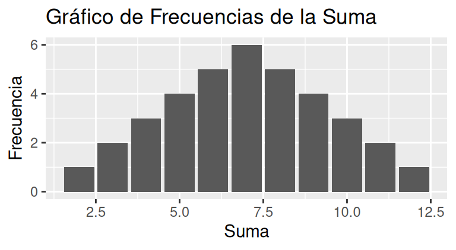
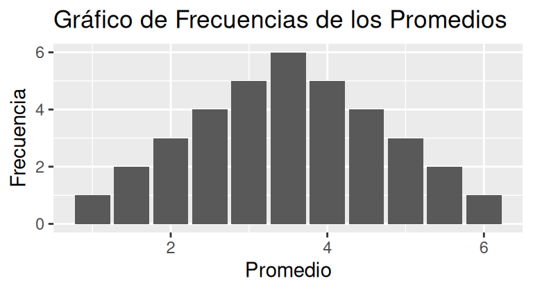
Probabilidad de promedio de 2 dados al azar
Promedio Probabilidad
1 1.0 0.02777778
2 1.5 0.05555556
3 2.0 0.08333333
4 2.5 0.11111111
5 3.0 0.13888889
6 3.5 0.16666667
7 4.0 0.13888889
8 4.5 0.11111111
9 5.0 0.08333333
10 5.5 0.05555556
11 6.0 0.02777778¿Qué aprendimos de esto?
la ocurrencia de algunos eventos (como la suma o promedio de dos dados) tienen una probabilidad determinada, lo que genera una distribución teórica de probabilidad
si repito un evento aleatorio (ej: sacar muestras repetidas de dos dados y promediarlos) obtengo la distribución empírica de probabilidad (de frecuencias de los eventos)
de acuerdo a la ley de los grandes números, el promedio empírico convergerá al teórico a medida que aumenta el número de repeticiones
ESTA CLASE
- Distribución teórica vs distribución empírica
- Curva normal
- Puntaje Z y estandarización
- Error estándar
Distribución teórica
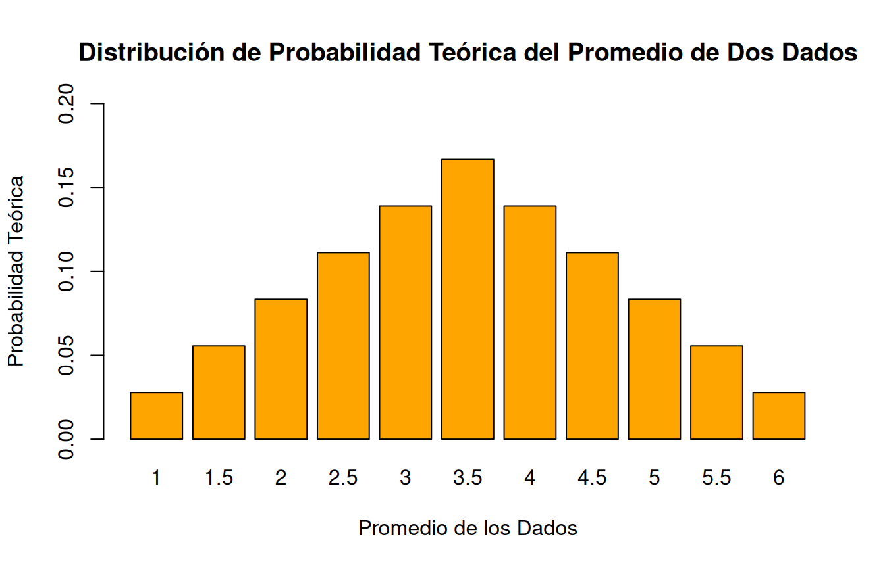
100 repeticiones (empírica)
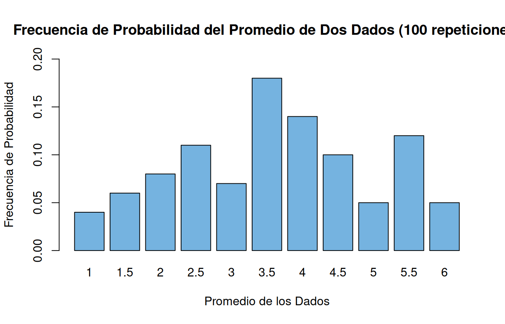
100 repeticiones vs. teórica
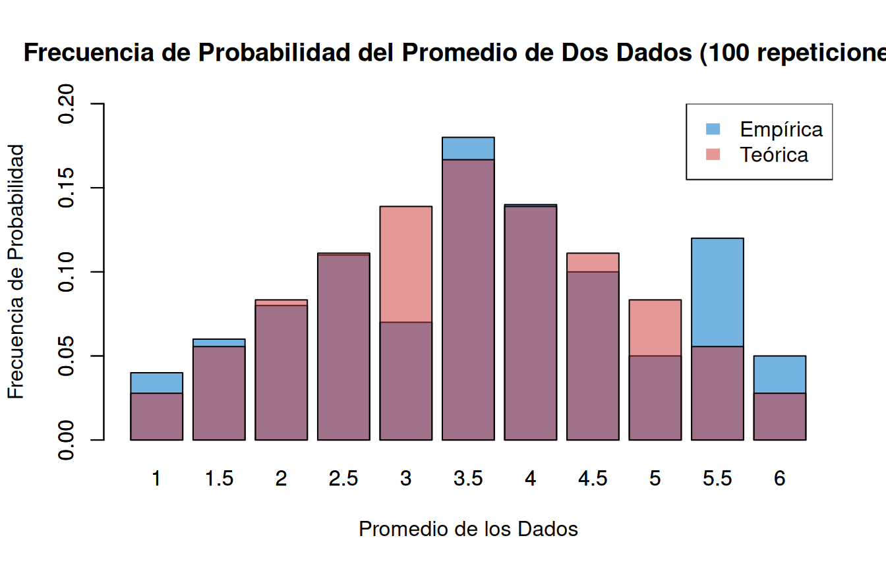
500 repeticiones vs. teórica
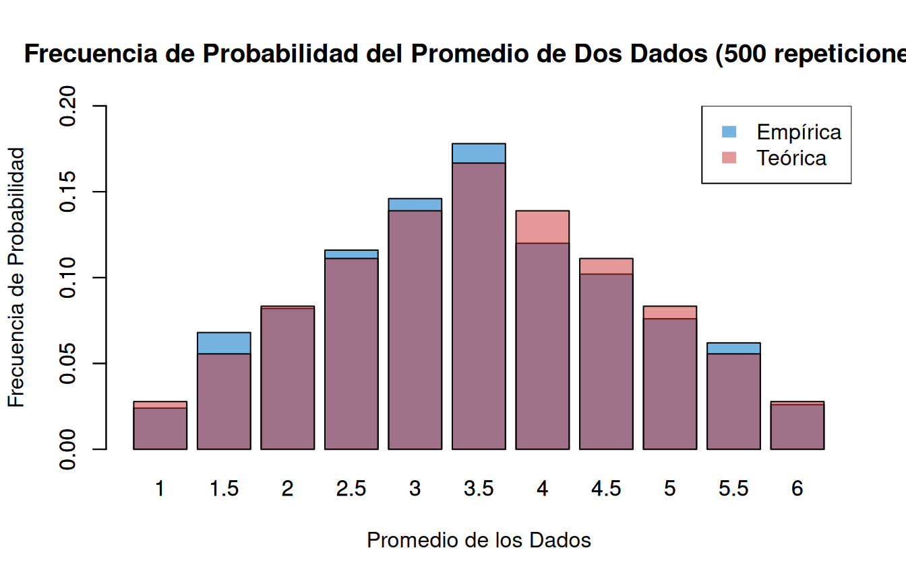
1500 repeticiones vs. teórica
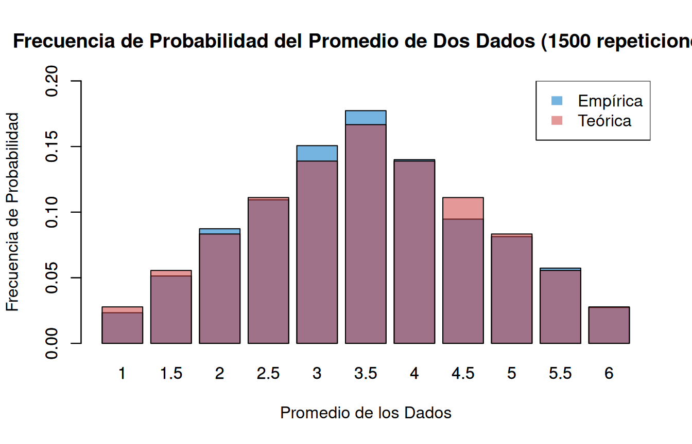
5000 repeticiones vs. teórica
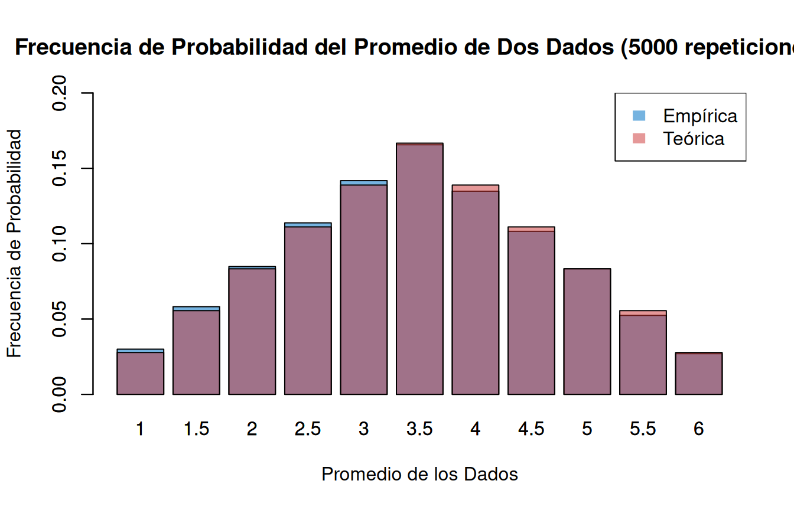
Muestra y distribución
Sabemos que si sacamos muchos promedios de eventos aleatorios estos se van a aproximar a una distribución teórica de probabilidad
¿De qué nos sirve esta información si…
¿contamos sólo con un evento aleatorio o muestra de datos (ej: un promedio de dos dados)?
¿no conocemos la distribución teórica?
Curva normal: un modelo teórico de distribución conocido
Histograma vs. curvas de densidad
Histograma
Frecuencias o probabilidad empírica de cada evento
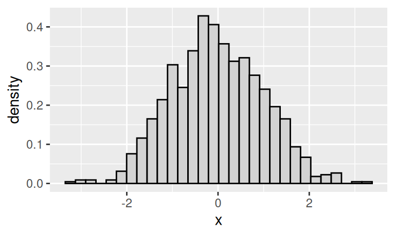
Curvas de densidad
Modelo teórico/matemático de la distribución
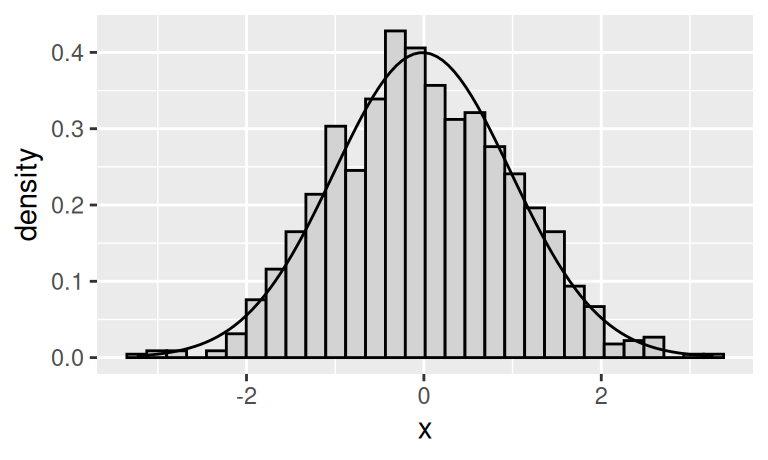
Curva de distribución
Una curva de distribución de frecuencias es un sustituto de un histograma de frecuencias donde reemplazamos estos gráficos con una curva suavizada
Representa una función/generalización de cómo se distribuyen las puntuaciones en la población de manera teórica
Las puntuaciones se ordenan de izquierda (más bajo) a derecha (más alto) en el eje horizontal (x)
El área bajo la curva representa el 100% de los casos de la población
Curva de distribución normal
Es una curva que representa la distribución de los casos de la población en torno al promedio y con una varianza conocida
Coinciden al centro el promedio, la mediana y la moda
Es simétrica y de forma acampanada
Establece áreas bajo la curva en base a desviaciones estándar del promedio

Distribución normal, desviaciones estándar y áreas bajo la curva

¿Por qué es importante la distribución normal en estadística?
Permite comparar puntajes de distintas distribuciones en base a un mismo estándar (puntajes Z)
Permite estimar proporciones bajo la curva normal de cualquier valor de la distribución
Base de la distribución muestral del promedio, error estándar, e inferencia estadística en general
Puntaje \(z\) y estandarización
\[z=\frac{x_i-\mu}{\sigma}\]
Estandarización: expresar el valor de una distribución en términos de desviaciones estándar basados en la distribución normal
Permite comparar valores de distribuciones distintas, ya que lleva los puntajes a un mismo estándar
Para obtener el valor estandarizado (puntaje Z) resta la media y se divide por la desviación estándar
Ejemplo comparación distribuciones (Ritchey, p. 148)
Mary obtiene 26 puntos en la prueba académica ACT, que va de 0 a 36, con media=22 y sd=2
Jason obtiene 900 puntos en la prueba SAT, que va de 200 a 1600, con media=1000 y sd=100
¿A quién le fue mejor?
¿Cómo le fue específicamente a cada uno?
Comparando peras con manzanas
\[ \begin{align*} Z_{Mary}&=\frac{x-\mu}{\sigma}=\frac{26-22}{2}=2 \\ \\ Z_{Jason}&=\frac{x-\mu}{\sigma}=\frac{900-1000}{100}=-1 \end{align*} \]
\(Z\) entrega un puntaje comparable en términos de desviaciones estándar respecto del promedio
Estos puntajes además pueden traducirse a la ubicación del puntaje en percentiles de la distribución normal
Proporciones
Asumiendo distribución normal, se puede obtener la proporción de casos bajo la curva normal que están sobre y bajo el puntaje Z
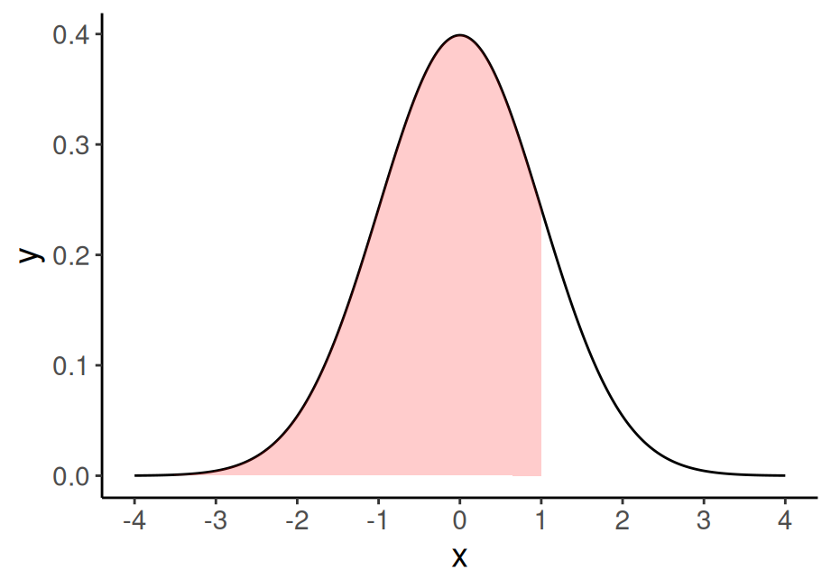
Ejemplo 1
Pensemos en estatura de 1.65, en una muestra con \(\bar{x}=160\) y \(\sigma=5\).
\[z=\frac{x-\mu}{\sigma}=\frac{165-160}{5}=1\]
En base a la distribución normal sabemos que bajo 1 desviación estándar está el 68% de los datos + la cola izquierda de la curva, que es (100-68)/2=16%.
Ej: 84% (68+16) de los casos tienen una estatura menor a 165 cm
Ejemplo 2
Puntaje en prueba=450, en una muestra con media=500 y ds=100, en R
[1] 30.85375Distribución muestral del promedio
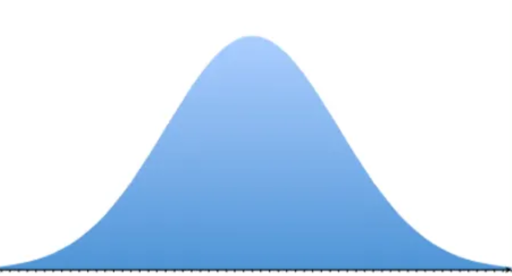
Si tengo la desviación estándar de los promedios, puedo construir un intervalo de probabilidad, basado en la curva normal
Por ejemplo si mi promedio es 10 y la desviación estándar (ds) es 1, puedo decir que en un rango de 8 y 12 se encuentra (aprox) el 95% de los promedios (prom +/- 2 ds)
Peeero…
Problema: tenemos 1 SOLA MUESTRA, y un solo promedio
¿Cómo obtenemos entonces la desviación estándar de los promedios?
Error estándar y Teorema Central del Límite (TCL)
Desviación estándar y error estándar

- más que el promedio de la variable en nuestra muestra, en inferencia nos interesa estimar en qué medida ese promedio da cuenta del promedio de la población
- contamos con una muestra, pero sabemos que otras muestras podrían haber sido extraídas, probablemente con distintos resultados.
Distribución muestral del promedio

Distribución muestral del promedio

Distribución muestral del promedio

Teorema central del límite
la distribución de los promedios de distintas muestras - o distribución muestral del promedio - se aproxima a una distribución normal
En muestras mayores a 30 la desviación estándar de los promedios (error estándar del promedio) equivale a:
\[\sigma_{\bar{X}}=SE(error\ estándar)=\frac{s}{\sqrt{N}}\]
\(s\) = desviación estándar de la muestra
\(N\) = tamaño de la muestra
Basados en el Teorema Central del Límite, es posible calcular la desviación estándar de los promedios (error estándar) con
una sola muestra
Demostración: 10 muestras, 5 casos c/u
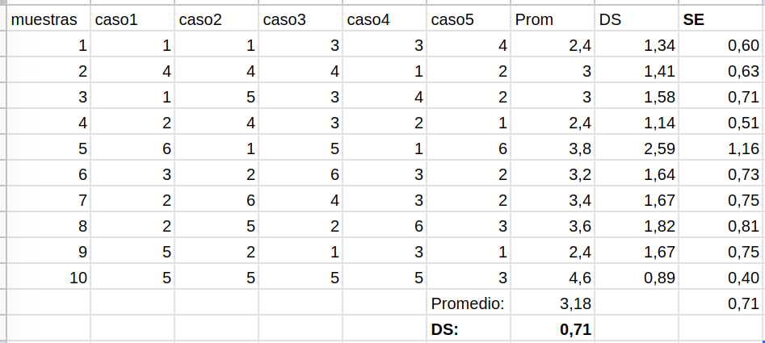
-> ver demostración con más casos aquí
¿Para qué nos sirve el error estándar (SE) del promedio?
(… y de otros estadísticos, como la correlación)
Usos del error estándar
Dos usos complementarios:
construcción de intervalos de confianza
test de hipótesis
-> Próxima clase
Resumen
Probabilidades teóricas y empíricas
Curva normal y puntajes Z
Teorema Central del Límite
Error estándar

Estadística Correlacional
Inferencia, asociación, y reporte
Juan Carlos Castillo
Sociología FACSO - UChile
2do Sem 2026